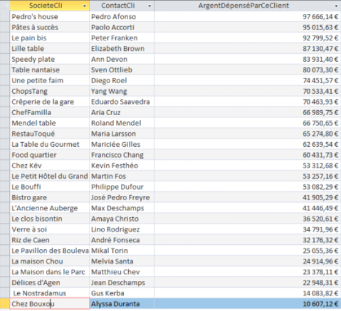
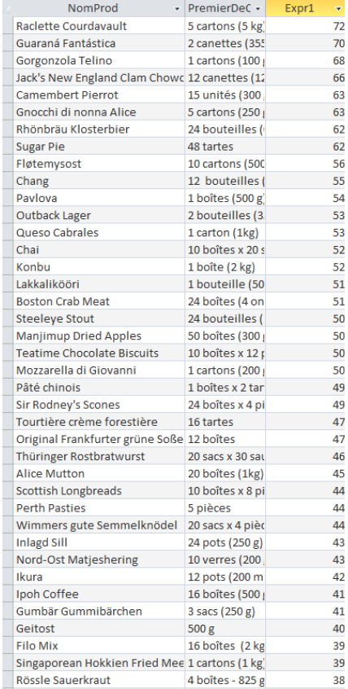
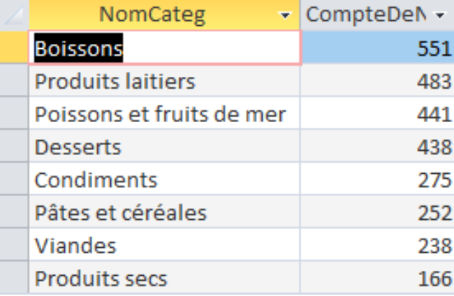
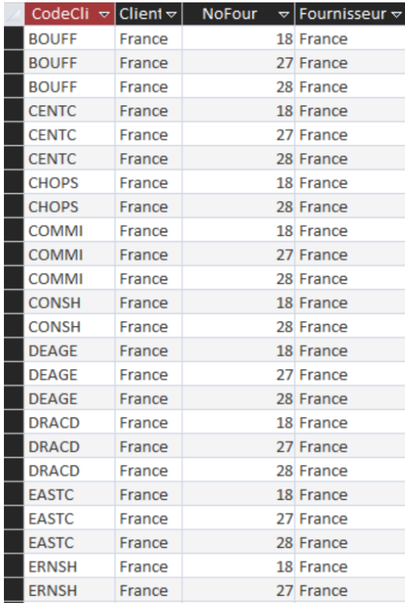

-
Requête d'Anastasia : liste de chaque client·e en fonction du chiffre d’affaires qu’il
ou
elle a généré pour KDou – cela pourrait permettre d’analyser les facteurs qui favorisent la fidélisation
des
client·es : on pourrait par la suite identifier des caractéristiques spécifiques à ces client·es afin de
mieux cibler les futur·es acheteur·ses (avec des publicités ciblées par exemple).
Nous effectuons une jointure sur le numéro de commande entre les tables Commande et
DetailCommande.
Nous effectuons une jointure sur le code client entre la table ainsi obtenue et la table
Client.
Nous regroupons les tuples par société cliente et contact du/de la client·e.
Nous effectuons une projection sur la société cliente et le contact du/de la client·e, et nous
utilisons la fonction d’agrégation Somme (Sum) pour calculer le chiffre d’affaires généré par ce·tte
client·e. Cela correspond à la somme des prix unitaires multiplié par les quantités commandées, auxquels
on retranche les remises. On ne compte volontairement pas les frais de port dans la mesure où ils sont
encaissés en dernière instance par les transporteurs et non par l’entreprise KDou.
Nous ordonnons les tuples ainsi obtenus par ladite somme, dans l’ordre décroissant, afin d’afficher
en premier les « plus gros·ses client·es » de KDou.
Nous effectuons donc la requête suivante :
SELECT Client.SocieteCli, Client.ContactCli,
Sum([PrixUnitCli]*[QteCom]-[PrixUnitCli]*[QteCom]*[Remise]) AS
ArgentDépenséParCeClient
FROM Client INNER JOIN (Commande INNER JOIN DetailCommande ON
Commande.NoCom = DetailCommande.NoCom) ON Client.CodeCli =
Commande.CodeCli
GROUP BY Client.SocieteCli, Client.ContactCli
ORDER BY Sum(([PrixUnitCli]*[QteCom])-
[PrixUnitCli]*[QteCom]*[Remise]) DESC;
Nous obtenons cette table :

-
Requête de Farah : détermination des produits les plus vendus afin de permettre à KDou
de concentrer son offre là où la demande est la plus importante.
-
Première requête :
Nous effectuons une jointure sur la référence du produit entre les tables Produit et
DetailCommande.
Nous effectuons une jointure sur le numéro de commande entre la table ainsi obtenue et la table
Commande.
Nous effectuons une projection sur le nom de produit et la quantité vendue par unité
achetée.
-
Deuxième requête :
Nous travaillons sur la table obtenue à l’aide de la première requête.
Nous regroupons les tuples par nom de produit.
Nous effectuons une projection sur le nom de produit, nous utilisons la fonction d’agrégation
First pour sélectionner le premier élément des quantités vendues par unités achetées, que nous
renommons PremierDeQteParUnite, et nous utilisons la fonction d’agrégation Somme (Sum) pour faire la
somme des quantités vendues.
Nous ordonnons les tuples ainsi obtenus par ladite somme, dans l’ordre décroissant, afin
d’afficher les produits les plus vendus en premier.
Nous effectuons donc les requêtes suivantes :
SELECT Produit.NomProd, Produit.QteParUnite
FROM Commande INNER JOIN (Produit INNER JOIN DetailCommande ON
Produit.RefProd = DetailCommande.RefProd)
ON Commande.NoCom = DetailCommande.NoCom;
SELECT [Requête1 Farah].NomProd, First([Requête1
Farah].QteParUnite) AS PremierDeQteParUnite, Sum([Somme]) AS
Expr1 FROM [Requête1 Farah]
GROUP BY [Requête1 Farah].NomProd
ORDER BY Sum([Somme]) DESC;
Nous obtenons la table suivante :

-
Requête d'Abdelhafid : détermination des catégories dans lesquelles se vendent le plus
de produits, là aussi afin de permettre à KDou de focaliser son offre là où la demande est la plus élevée.
Nous effectuons une jointure sur le code catégoriel entre les tables Categorie et Produit.
Nous effectuons une jointure sur la référence du produit entre la table ainsi obtenue et la table
DetailCommande.
Nous effectuons une jointure sur le numéro de fournisseur entre la table obtenue par les deux
jointures précédentes et la table Fournisseur.
Nous regroupons les tuples par nom de catégorie.
Nous effectuons une projection sur le nom de la catégorie et nous utilisons la fonction
d’agrégation de compte (Count) pour faire le compte des noms de catégorie (on aurait ici pu choisir un
autre attribut) que nous renommons CompteDeNomCateg.
Nous ordonnons les enregistrements ainsi obtenus par ledit compte, dans l’ordre décroissant.
Nous effectuons donc la requête SQL suivante :
SELECT Categorie.NomCateg, Count(Categorie.[NomCateg]) AS
CompteDeNomCateg
FROM Fournisseur INNER JOIN ((Categorie INNER JOIN Produit ON
Categorie.CodeCateg = Produit.CodeCateg) INNER JOIN
DetailCommande ON Produit.RefProd = DetailCommande.RefProd) ON
Fournisseur.NoFour = Produit.NoFour
GROUP BY Categorie.NomCateg
ORDER BY Count(Categorie.[NomCateg]) DESC;
Et nous obtenons la table suivante :

-
Requête d'Adam : détermination des fournisseurs qui ont des client·es dans le même pays
qu’eux, afin de permettre à KDou de faciliter les échanges entre client·es et fournisseurs du même pays et
de promouvoir le commerce local.
Nous effectuons une jointure sur la référence du produit entre les tables Produit et
DetailCommande.
Nous effectuons une jointure sur le numéro de fournisseur entre la table ainsi obtenue et la table
Fournisseur.
Nous effectuons une jointure sur le numéro de commande entre la table ainsi obtenue et la table
Commande.
Nous effectuons une jointure sur le code client entre la table obtenue par ces jointures
successives et la table Client.
Nous regroupons les tuples par code client, pays du/de la client·e, numéro de fournisseur et pays
du fournisseur.
Nous restreignons les regroupements obtenus à ceux dont le pays du/ de la client·e est le même que
le pays du fournisseur.
Nous effectuons une projection sur le code client, le pays du/de la client·e, le numéro de
fournisseur et le pays du fournisseur.
Nous ordonnons les tuples ainsi obtenus par code client dans l’ordre croissant.
Nous effectuons donc la requête SQL suivante :
SELECT DISTINCT Client.CodeCli, Client.Pays,
Fournisseur.NoFour, Fournisseur.Pays
FROM Client INNER JOIN (Commande INNER JOIN (Fournisseur INNER
JOIN (Produit INNER JOIN DetailCommande ON Produit.RefProd =
DetailCommande.RefProd) ON Fournisseur.NoFour = Produit.NoFour)
ON Commande.NoCom = DetailCommande.NoCom) ON Client.CodeCli =
Commande.CodeCli
GROUP BY Client.CodeCli, Client.Pays,
Fournisseur.NoFour, Fournisseur.Pays, 1
HAVING (((Client.Pays)=[Fournisseur].[Pays]))
ORDER BY 1;
Nous obtenons la table suivante :
